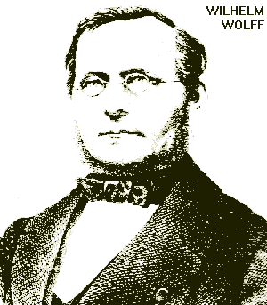

Works of Frederick Engels 1876

Written: between June and September 1876;
First published: in Die schlesische Milliarde Von Wilhelm Wolff. Mit Einleitung von Friedrich Engels Hottingen-Zürich, 1886;
Translated: Barrie Selman for Collected Works;
Transcribed: by director@marx.org, Jan 1996.
If I am not mistaken it was towards the end of April 1846. Marx and I were then living in a Brussels suburb; we were engaged in a joint piece of work [the German Ideology] when we were informed that a gentleman from Germany wished to speak to us. We found a short but very stockily built man; the expression on his face proclaimed both goodwill and quiet determination; the figure of an East German peasant in the traditional clothes of an East German provincial bourgeois. It was Wilhelm Wolff. Persecuted for infringing the press laws, he had been fortunate enough to evade the Prussian prisons. We did not suspect at first sight what a rare man lay concealed under this inconspicuous exterior. A few days were enough to put us on terms of cordial friendship with this new comrade in exile and to convince us that it was no ordinary man we were dealing with. His cultured mind schooled in classical antiquity, his wealth of humor, his clear understanding of difficult theoretical problems, his passionate hatred of all oppressors of the masses, his energetic and yet tranquil nature soon revealed themselves; but it took long years of collaboration and friendly association in struggle, victory and defeat, in good times and bad, to prove the full extent of his unshakable strength of character, his absolute, unquestionable reliability, his steadfast sense of duty equally exacting towards friend, foe and self.
Wilhelm Wolff was born on June 21, 1809 in Tarnau, near Frankenstein in Silesia. His father was an hereditary serf and also kept the court kretscham (the inn -- Polish karczma -- where the village assizes took place), which did not save him from having to perform statute labor with his wife and children for his worthy lord. Wilhelm was thus not only familiar with the frightful plight of the East German bondsmen from early childhood, but also suffered it himself. But he learnt more besides. His mother, of whom he always spoke with particular affection and who possessed an education unusual for her station, roused and nursed in him anger at the shameless exploitation and disgraceful treatment of the peasants by the feudal lords. And we shall see how this anger fermented and seethed in him all his life when we reach the period when he was finally able to give vent to it in public. This peasant lad's talents and lust for knowledge soon attracted attention; if possible he was to go to grammar school, but what obstacles there were to be surmounted before this could be achieved! Quite apart from financial difficulties there was the worthy lord and his steward, without whom nothing could be done. Although serfdom had been abolished in name in 1810, feudal tributes, statute labor, patrimonial jurisdiction and the manorial police remained in existence, thus preserving serfdom in practice. And the worthy lord and his officials were far more inclined to make peasant lads into swineherds than students. However, all barriers were successfully negotiated. Wolff gained admission to the grammar school at Schweidnitz and then went to university in Breslau. At both of these institutions he had to earn the greater part of his living by giving private lessons. At university he preferred to devote his energies to classical philology; but he was not one of those hair-splitting philologists of the old school; the great poets and prosaists of the Greeks and Romans were received by him with genuine understanding and remained his favorite reading as long as he lived.
He had almost concluded his university studies when the persecution of the Demagogues by the Federal Diet and the Austrian and Prussian governments, which had died down in the twenties, was resumed. A member of the Students' Association, he too was arrested in 1834, dragged from prison to prison for years while inquiries proceeded, and finally sentenced. For what? I do not think that he ever found it worth the trouble of saying. Suffice it to say that he was taken to the fortress at Silberberg. There he found comrades in suffering, Fritz Reuter among others. A few months before Wolff's death, the latter's Ut mine Festungstid came into his hands, and no sooner had he discovered the author to be his old fellow-sufferer than he sent news to him through the publisher. Reuter answered him straightaway in a long and very friendly letter, which I have here in front of me and which proves that on January 12, 1864, at least, the old Demagogue was certainly not the kind of man to knuckle under meekly:
"I've been sitting here now for nearly thirty years," he writes, "until my hair has turned grey, waiting for a thorough-going revolution, documenting the people's will energetically once and for all, but to what avail? ... if only the Prussian people would at least refuse to pay taxes; it is the only means of getting rid of Bismarck and Co. and worrying the old king to death."
At Silberberg Wolff experienced the many sufferings and few joys of the incarcerated Demagogues which Fritz Reuter has described so vividly and with such humor in the above book. It was pitiful compensation for the damp casemates and bitterly cold winters that the old cliffside castle had a garrison of old invalids, so-called Garnisöner, who were not unduly harsh and were sometimes approachable at the price of a schnapps or a four groschen piece. Be that as it may, by 1839 Wolff's health had suffered so much that he was pardoned.
He went to Breslau and tried to make his way as a teacher. But he had reckoned without his host, and his host was the Prussian government. Interrupted in the middle of his studies by his arrest, he had not been able to complete the prescribed three years at the university, let alone take his examinations. And in Prussian China only someone who had done all this in accordance with the rules and regulations was considered to be a competent scholar. Anyone else, however learned he might be in his field, as Wolff was in classical philology, was outside the guild and prevented from making public use of his knowledge. There remained the prospect of struggling through as a private tutor. But a government permit was needed for that, and when Wolff applied for one it was denied him. The Demagogue would have had to starve to death or return to do statute labor in his native village if there had been no Poles in Prussia. A landowner from Posen took him on as a domestic tutor; he spent several years here, of which he always spoke with particular pleasure.
Having returned to Breslau, after much tribulation and contention he finally obtained the permission of a highly esteemed royal government to give private lessons, and could now at least earn a modest living. Being a man of very few needs, he did not ask for more. This was when he resumed the struggle against the prevailing oppression, as far as this was possible under the dreadful conditions of the time. He had to restrict himself to bringing to public attention isolated instances of the despotism of civil servants, landowners and manufacturers, and even then encountered obstacles with the censors. But he refused to be diverted from his purpose. The newly established High Court of Censorship had no more regular and persistent client than Wolff, the private tutor from Breslau. Nothing afforded him greater pleasure than to dupe the censors, which, given the stupidity of most of them, was not all that difficult as soon as one became somewhat familiar with their weak spots. Thus it was he who scandalized pious spirits to the limit by discovering the following popular "song" of the repentant sinner in an old hymn book which was still in use in some places, and publishing it in the Silesian local newspapers:
I really am a gallows-bird,
One of the truly bad ones,
And gobble up my sins unheard
As Russians eat up onions.
A cringing dog, I pray to Thee,
Lord, cast the bone of grace to me,
Do take me by the ear and throw
Me to Thy Heaven, though I be low.
This song spread throughout Germany like wildfire, provoking the resounding laughter of the godless and the indignation of those "that are quiet in the land." The censor received a harsh reprimand, and the government once again began to keep a watchful eye on this private tutor Wolff, this turbulent hare-brain whom five years' fortress had failed to tame. And it was not long before another pretext was found to put him on trial. After all, the old Prussian legislation was spread out over the country like an ingeniously contrived system of traps, snares, pitfalls and nets which not even loyal subjects could always avoid, while the disloyal ones were all the more certain to get caught in them.
The press offense with which Wolff was charged at the end of 1845 or early 1846 was so trifling that none of us can now recall the exact circumstances." But the persecution attained such dimensions that Wolff, who had had quite enough of Prussian prisons and fortresses, evaded imminent arrest by leaving for Mecklenburg. [1886 noteby Engels: "According to Wermuth-Stieber: Die Communisten-Verschwörungen des 19. Jahrhunderts, II, P. 141, Wolff was sentenced to three months' confinement in a fortress by the Breslau Supreme Court in 1846 for "offenses against the press laws."] Here he found a safe refuge amongst friends until his unimpeded passage from Hamburg to London could be arranged. In London, where he participated for the first time in a public association -- the still existing German Communist Workers' Educational Society -- he did not remain long but then came, as we have already related, to Brussels.
In Brussels he soon found employment in a correspondence agency"' which had been set up there, supplying German newspapers with French, English and Belgian news, edited, as far as circumstances permitted, along Social-Democratic lines. When the Deutsche-Brüsseler-Zeitung placed itself at the disposal of our party Wolff worked for that too. In the Brussels German Workers' society, which was founded by us at this time, Wolff was soon among the favorite speakers. He would give a weekly survey of current events which was always a masterpiece of popular presentation, both humorous and powerful, in which he castigated in particular, and quite rightly, the pettiness and meanness of both masters and subjects in Germany. These political surveys were such a favorite theme of his that he would deliver them to any society in which he took part, and always with the same mastery of popular presentation.
The February Revolution broke out and found an immediate response in Brussels. Every evening crowds of people gathered in the Great Market place in front of the City Hall, which was occupied by the civil guard and gendarmerie; the numerous public houses around the market place were packed. People were shouting, "Vive la République!", and singing the Marseillaise, pushing and shoving and. being shoved back. The government was apparently keeping as quiet as a mouse, but called up the reserves and men on leave in the provinces. It had the most respected Belgian republican, Mr. Jottrand, secretly informed that the King was prepared to abdicate should the people so wish, and that he could hear this from the King himself as soon as he liked. Jottrand was in fact told by Leopold that he was himself a republican at heart and would never stand in the way if Belgium should wish to constitute itself a republic; his only wish was that everything should take place properly and without bloodshed, and he hoped incidentally to receive a decent pension. The news was swiftly and secretly put out and had such a soothing effect that no attempt at insurrection was made. But scarcely were the reserves gathered together and the majority of troops concentrated around Brussels -- three or four days were enough in that tiny country -- when there was no more talk of abdication; suddenly one evening the gendarmerie went into action with the flats of their swords against the crowds in the market place, and arrests were made right, left and center. Among the first to be beaten and arrested was Wolff, who had been quietly proceeding home. Dragged into the City Hall, he was given a further beating by the raging and drunken city militia, and, after several days' imprisonment, dispatched over the border to France.
He did not stay long in Paris. The March Revolution in Berlin and the preparations for the Frankfurt Parliament and the Berlin Assembly prompted him first to go to Silesia to campaign for radical elections there. As soon as we had started a newspaper, whether in Cologne or in Berlin, he wanted to join us. His general popularity and his powerful vernacular eloquence succeeded in getting radical candidates elected, particularly in the rural constituencies, who without him would not have stood a chance.
In the meanwhile the Neue Rheinische Zeitung appeared on June 1 in Cologne, with Marx as editor-in-chief, and Wolff soon came to take over his duties on the editorial board. His inexhaustible energy, his scrupulous, unswerving conscientiousness had the drawback for him that the young people, of whom the entire editorial board consisted, sometimes took an extra break in the certitude that "Lupus" [Wolff's nickname, the Latin word for "wolf"] will see that the paper comes out", and I cannot claim to have been wholly innocent of this myself. Thus it was that in the early days of the paper Wolff had less to do with leading articles than with the day-to-day jobs. But he soon found a way of turning these, too, into an independent activity. Under the regular heading "Aus dem Reich" the news from the small states of Germany was assembled; the small-state and small-town narrow-mindedness and philistinism of both the rulers and the ruled were treated with incomparable humor. At the same time he gave his survey of current events in the Democratic Society" every week, which soon made him one of the most popular and effective speakers here too.
The stupidity and cowardice of the bourgeoisie, which had been rising ever higher since the June battle in Paris, had again allowed reaction to summon up its strength. The camarillas of Vienna, Berlin, Munich, etc., were working hand in hand with the noble Imperial Regent and behind the scenes was Russian diplomacy, pulling the strings on which these puppets danced. Now, in September 1848, the moment for action was approaching for these gentlemen. Under direct and indirect Russian pressure (conveyed by Lord Palmerston) the first Schleswig-Holstein campaign was decided by the ignominious Malmö ceasefire. The Frankfurt Parliament stooped so far as to ratify it, thus publicly and unquestionably renouncing the revolution. The Frankfurt uprising of September 18 was the response; it was put down. Almost simultaneously the crisis between the Constitutional Agreement Assembly and the Crown had broken out. On August 9, the Assembly had requested the government in an extremely mild, indeed timid resolution to be so good as to do something to prevent the reactionary officers from indulging in their shameless conduct so publicly and offensively. When it demanded in September that this resolution be put into effect, the response was the appointment of the openly reactionary Pfuel ministry with a general at its head (September 19) and the appointment of the notorious Wrangel as Supreme General of Brandenburg: two broad hints to the Berlin Agreers either to go down on their knees or to expect a rude dispersal. General excitement set in. In Cologne, too, public meetings were held and a Committee of Public Safety appointed. The government decided to deliver the first blow in Cologne. Consequently on the morning of September 25, a number of democrats were arrested, including the present Mayor, then generally known as "Red Becker." [Hermann Heinrich Becker] The excitement mounted. In the afternoon a public meeting was held on the Altenmarkt. Wolff presided. The civic militia were formed up on all sides, not objecting to the democratic movement but 'giving first priority to their own welfare. In response to an inquiry, they stated that they were there to protect the public. Suddenly people crowded into the market place with the cry: "The Prussians are coming!" Joseph Moll, also arrested the same morning but freed by the people, who was then speaking, shouted: "Citizens, do you intend to run away from the Prussians?" "No, no!" was the answer. "Then we must build barricades!" and they set to work at once. -- The outcome of the day of barricades in Cologne is well known. Provoked by a false alarm, without encountering any resistance, without any arms -- the civic militia went prudently home -- the whole movement came, quite bloodlessly, to nothing; the government achieved its purpose: Cologne was declared in a state of siege, the civic militia disarmed, the Neue Rheinische Zeitung banned and its editorial staff compelled to go abroad.
The state of siege in Cologne was short-lived. It ended on October 4. On the 12th the Neue Rheinische Zeitung resumed publication. Wolff had gone to Dürkheim in the Palatinate where he was left in peace. There was a warrant out for his arrest as for several others of the editorial staff, for conspiracy, etc.; but our Wolff did not bide long in the Palatinate, and when the grape harvest was over he suddenly turned up in the editorial office again, 17 Under Hutmacher. He managed to find rooms next door, from where he was able to cross the yard into the office without setting foot in the street. However, he soon tired of captivity; disguised in a long overcoat and a cap with a long peak, he sallied out into the darkness nearly every evening on the pretext of buying tobacco. He believed that no one recognized him, although his curiously gnarled figure and determined gait were absolutely unconcealable; anyway he was not betrayed. Thus he lived for several months while the warrants out for the rest of us were gradually lifted. Finally on March 1, 1849 we were informed that there was no longer any danger, and Wolff now went before the examining magistrate, who also declared that, being based on exaggerated police reports, the whole case had been dropped.
Meanwhile the Berlin Assembly had been sent packing and Manteuffel's period of reaction had set in. One of the first measures of the new government was to reassure the feudal lords of the Eastern Provinces regarding their disputed right to unpaid peasant labor. After the March days the peasants of the Eastern Provinces had ceased to perform statute labor, and in places even forced the worthy lords to give them a written disclaimer concerning such labor. It was thus merely a matter of declaring this existing state of affairs legal, and the long oppressed peasant east of the Elbe would be a free man at last. But the Berlin Assembly, a full 59 years after August 4, 1789, when the French National Assembly had abolished all feudal burdens without compensation, had still not been able to summon up the courage to take the. same step. It somewhat eased the terms for the commutation of statute labor; but only a few of the most scandalous and infuriating feudal rights were to be abolished without compensation. Yet before this Bill was finally passed the Assembly was broken up, and Mr. Manteuffel declared that this Bill would not be passed into law by the government.' This destroyed the hopes of the Old Prussian peasants subject to statute labor, and the need now was to influence them by explaining to them the position they were facing. And Wolff was just the man for this. Not only was he the son of a bondsman and had himself been forced to do statute labor as a child; not only had he retained the full fervor of his hatred towards the feudal oppressors which this childhood had aroused in him; no one knew the feudal method of enslavement so well in all its details as he did, and this in the very province that provided a complete pattern-card of all its manifold forms -- Silesia.
Thus Wolff opened the campaign against the feudal lords, which culminated in the Silesian Milliard and to which I refer below. It was a campaign which by right ought to have been waged by the bourgeoisie. It was, after all, precisely the struggle against feudalism that was the mission of this class in world history. But as we have seen, it failed to wage it, or only pretended to do so. Thanks to the social and political backwardness of Germany, the German bourgeoisie everywhere left its own political interests in the lurch, because the proletariat was already looming up behind it. The vague hopes and desires of the Parisian workers in February, but even more their four-day battle of desperation in June 1848, terrified not only the bourgeoisie of France but of all Europe. And in Germany even simple democratic demands, such as they had themselves long since carried out legally in Switzerland, seemed to the quaking bourgeois to be attacks on their property, their security, their lives, etc. As cowardly as ever, the German bourgeois sacrificed their common, i.e., political interests so that each might save his private interest, his capital. Rather a return to the old bureaucratic-feudal absolutism than a victory of the bourgeoisie as a class, than a modern bourgeois state attained in a revolutionary way and strengthening the revolutionary class, the proletariat! That was the German bourgeoisie's cry of anguish, in the midst of which reaction triumphed an along the line. Thus the party of the proletariat had to take up the struggle at the point where the bourgeoisie had absconded from the battlefield. And Wolff took up the struggle against feudalism in the Neue Rheinische Zeitung. But not in such a way as to afford the bourgeois any joy; no, in truly revolutionary fashion, in such a manner that the bourgeoisie was just as appalled at these articles exhaling the spirit of the great French Revolution as the feudal lords and the government themselves."
Few of the many inflammatory articles in the Neue Rheinische Zeitung had such an effect as these, eight in number, which appeared between March 22 and April 25. Orders for the newspaper from Silesia and the other Eastern Provinces increased at a furious rate; individual issues were requested and eventually, since the exceptional freedom of the press allowed us by Rhenish law was lacking in the other provinces, and there was no question of a reprint under their noble local law, someone came up with the idea of secretly reprinting in Silesia the entire eight issues as near to the original in appearance as possible and disseminating them in thousands of copies -- a procedure to which the editorial board was naturally the last to object.
On May 19 the Neue Rheinische Zeitung was suppressed after the last issue had appeared printed in red. Apart from 23 pending press trials the Prussian police had so many other pretexts for seizing each individual member of the editorial board that they all left Cologne and Prussia immediately. Most of us went to Frankfurt, where the decisive point seemed near at hand. The victories of the Hungarians provoked the Russian invasion; the conflict between the governments and the Frankfurt Parliament on account of the Imperial Constitution had given rise to various insurrections, of which those in Dresden, Iserlohn and Elberfeld had been suppressed, while those in the Palatinate and in Baden were still in progress. Wolff had an old Breslau mandate in his pocket as the substitute for that old distorter of history, Stenzel; they had only got wailer Stenzel through by including the agitator Wolff as his substitute. Like all good Prussians, Stenzel had naturally obeyed the Prussian government's order of recall from Frankfurt. Wolff now took his place.
The Frankfurt Parliament, having sunk through its own idling and stupidity from the position of the most powerful assembly that had ever convened in Germany to the most utter impotence, now evident to all the governments, even to the Imperial Government it had appointed itself and to the very Parliament itself, was at a loss what to do, caught between the governments which had massed their forces, and the people who had risen to defend the Imperial Constitution. There was still everything to be gained if only the Parliament and the leaders of the South German movement showed courage and determination. A parliamentary decision calling the armies of Baden and the Palatinate to Frankfurt to defend the Assembly would have sufficed. The Assembly would thereby have regained the confidence of the people at a stroke. The defection of the troops of Hesse and Darmstadt, and the accession of Württemberg and Bavaria to the movement could then have been anticipated with certainty; the small states of central Germany would likewise have been brought in; Prussia would have had its hands full, and, in the face of such a mighty movement in Germany, Russia would have been compelled to retain in Poland part of the troops subsequently employed with success in Hungary. Thus Hungary could have been saved at Frankfurt, and moreover there was every likelihood that with the spread of a victorious revolution in Germany, the outbreak that was daily expected in Paris would not have dissolved into the uncontested defeat of the radical philistines which occurred on June 13, 1849.
The prospects were as favorable as they could be. The advice to summon the guard of Baden and the Palatinate was given by all of us in Frankfurt, that to march to Frankfurt even without a summons, in Mannheim by Marx and myself. But neither the Baden leaders nor the Frankfurt parliamentarians had the courage, energy, intelligence or initiative.
Instead of acting, the Parliament decided -- as if it had not spoken too much already -- to speak again, namely, in a "Proclamation to the German Nation." A commission was appointed which produced two drafts, the one approved by the majority having been prepared by Uhland. Both of them were feeble, bloodless and powerless, expressing nothing but their own helplessness and dejection and the bad conscience of the Assembly itself. At the debate on May 26, they gave our Wolff the opportunity to speak his mind to the honorable parliamentarians once and for all. The shorthand record of this speech runs':
"Wolff of Breslau:
"'Gentlemen! I have registered my name against the Proclamation to the Nation that has been composed by the majority and read out here, because I think it utterly inadequate in the present conditions, because I find it too weak -- suitable solely as an article for publication in those newspapers which represent the party that has conceived it, but not as a Proclamation to the German Nation. Since a second has now been read out, I shall only remark in passing that I would oppose this one even more strongly, for reasons that I do not need to give here.' (Voice from the Center: 'Why not?') 'I am speaking only of the majority proclamation; it is after all so moderate that even Mr. Buss could not object to it too much, and that is certainly the worst recommendation for any proclamation. No, gentlemen, if you wish to retain any influence whatsoever over the people, you must not speak to the people in the way you do in the Proclamation; you must not speak of legality, of legal grounds and so on, but of illegality, in the same way as the governments, as the Russians, and by Russians I mean Prussians, Austrians, Bavarians and Hanoverians.' (Commotion and laughter.) 'These are all included under the common name of Russians.' (Great amusement.) 'Yes, gentlemen, in this Assembly, too, the Russians are represented. You must say to them: just as you adopt the legal point of view, so shall we. This is the viewpoint of force, and in parenthesis you ought to explain that legality means opposing the cannons of the Russians with force, with well-organized storming-parties. If you have to issue a proclamation at all, then issue one in which you declare from the very outset the first traitor to the people, the Imperial Regent, an outlaw.' ('Order!' Vigorous applause from the gallery.) 'And the ministers too!' (Renewed commotion.) 'Oh no, I will not be intimidated. He is the first traitor to the people.'
"President Reh: 'I think that Mr. Wolff has discarded all respect. He cannot describe the Archduke Imperial Regent as a traitor to the people before this House, and I must therefore call him to order...'
"Wolff: 'For my part, I accept the call to order and declare that I intended to be out of order, that he and his ministers are traitors.' (From all sides of the House: 'Order, this is scandalous!')
"President: 'I must deny you leave to speak.'
"Wolff: 'Well, I protest; it was my intention to speak here in the name of the people and to say what the people are thinking. I protest against every proclamation which is worded in this spirit.'"
These few words descended like a thunderbolt on the terrified Assembly. For the first time the real state of affairs had been clearly and openly expressed to its members. The treachery of the Imperial Regent and his ministers was a public secret; every one of those present saw it occurring before their very eyes; but no one dared to put into words what he saw. And now comes this disrespectful little Silesian and all at once demolishes their whole conventional house of cards! Even the "determined Left" could not help protesting energetically against the unforgivable breach of all parliamentary decorum which this simple statement of the truth constituted, through the mouth of their worthy representative Mr. Karl Vogt (Vogt -- the man who was sent a remittance of 40,000 francs in August, 1859, according to the lists of sums paid by Louis Napoleon to his agents, published in 1870). Mr. Vogt enriched the debate with the following shabbily embarrassed and infamously mendacious protest:
"'Gentlemen, I have requested leave to speak in order to defend the crystal-clear stream that has flowed from a poetic soul into this proclamation against the unworthy filth that has been thrown into the same or' (!) 'hurled at the same' (!), 'to defend these words against the muck which has piled up in this latest movement, threatening to swamp and defile everything there. Yes, gentlemen! It is muck and filth which are being cast in this' (!) 'way at all that may be considered pure, and I express my most profound indignation that such a thing' (!) 'could have happened.'"
Since Wolff had not mentioned Uhland's editing of the proclamation at all, but simply found its content too weak, one is at a loss to understand to what Mr. Vogt is actually referring with his indignation and his "filth" and "muck." But on the one hand there was the memory of the ruthless way in which the Neue Rheinische Zeitung had always treated false brethren of Vogt's sort; on the other, rage at Wolff's straight language, which made the time-serving game of these false brethren henceforth impossible. Forced to choose between real revolution and reaction, Mr. Vogt declares himself in favor of the latter and the Imperial Regent and his ministers -- of "all that may be considered pure." Unfortunately, the reactionaries wanted nothing to do with Mr. Vogt.
The very same day Wolff challenged Mr. Vogt to a duel with pistols through the deputy Würth from Sigmaringen, and when Mr. Vogt declined to shoot it out, threatened him with physical chastisement. Mr. Vogt, although physically a giant compared with Wolff, now fled under the protection of his sister, not showing his face anywhere except in her company. Wolff let the loudmouth go.
Everyone knows how a few days after the scene, the Assembly itself recognized the correctness of Wolff's utterances by fleeing from its own Imperial Regent and his government to Stuttgart.
We are nearing the end. Wolff remained at his post in Stuttgart even when the National Assembly was dispersed by the troops from Württemberg, then going to Baden and finally to Switzerland with the other refugees. He chose Zurich as his place of residence, where he immediately established himself as a private tutor, but naturally encountered fierce competition from the many other graduate refugees living there. In spite of the indigent life which ensued, Wolff would have stayed in Switzerland. But it became increasingly obvious that the Swiss Federal Council, obedient to the voice of European reaction, was determined little by little to harry all these refugees out of Switzerland, as Wolff put it. For most of them, this meant emigrating to America, and this was what the governments wanted. Once the refugees were on the other side of the ocean there was no being pestered by them.
Wolff too often pondered on the idea of emigrating to America, which the many friends of his who had gone there urged him to do. When the "harrying" became too much for him, he arrived, half-decided, in London in June 1851, where we gave him a place of abode for the time being. Here too the competition as a private tutor was very keen. Wolff was scarcely able to earn the paltriest living despite the greatest exertions. He did his utmost to keep his position a secret from his friends, as always when things were going badly for him. Nonetheless, he had been obliged by the end of 1853 to run up debts of about 37 sterling (750 marks), which weighed very heavily on him; he wrote in his diary the same summer:
"On June 21, 1853, I had to spend my birthday in almost horrible DISTRESS."
His intention of going to America would probably have been put into effect, had not a likewise fugitive German doctor in Manchester, who was a friend of Wolff's from Breslau, obtained him enough private lessons in Manchester through his connections to enable him at least to live off them. And so he made the move in early January 1854. In the beginning, certainly, things were rather touch-and-go. But his livelihood was assured, and then Wolff, with his extraordinary flair for getting on with children and winning their affection, was able to count on gradually extending his sphere of activities just as soon as he was known among the Germans there. This did not fail to happen. After a few years he found himself in a fairly comfortable material position for his demands, adored by his pupils, universally popular and respected by young and old, Englishmen and Germans on account of his uprightness, sense of duty and his cheerful amiability. It was in the nature of things that he mainly came into contact with bourgeois, in other words, more or less politically hostile elements; but although he never compromised either his character or his convictions in the slightest, only very rarely did he have to weather any conflicts, and this he did honorably. At that time we were all cut off from public political activity; we were silenced by the reactionary legislation, utterly ignored by the daily press and hardly honored by a refusal from the publishers in response to any of our offers; Bonapartism seemed to have triumphed over socialism forever. For several years Wolff was the only comrade I had in Manchester with the same views as myself; no wonder that we met almost daily and that I then again had more than ample opportunity of admiring his almost instinctively correct assessment of current events.
Suffice it to take a single instance to illustrate Wolff's conscientiousness. He set one of his pupils a sum in arithmetic from a textbook. He compared the answer with the one given in the so-called key, and found it wrong. But when the boy always arrived at the same answer after repeated attempts Wolff did the sum himself and discovered that the boy was right; the key contained a printer's error. At once Wolff sat down and worked through every sum in the book in order to make sure that there were no more such errors in the key: "That's never going to happen to me again!"
This conscientiousness was, in fact, the cause of his death, not even 55 years old. In the spring of 1864 he started suffering from severe headaches due to overwork, which gradually resulted in almost total insomnia. His doctor had gone away; he refused to consult any other. All pleas for him to cancel or limit his lessons for a while were in vain; whatever he had taken on, he wanted to see through. Only when he simply could not endure it any more did he occasionally cancel his lessons. But it was too late. The headaches caused by saturation of the brain with blood went from bad to worse, the insomnia became ever more unremitting. A blood-vessel in the cerebrum burst, and after repeated cerebral hemorrhages death occurred on May 9, 1864. With him, Marx and I lost our most faithful friend, and the German revolution a man of irreplaceable worth.